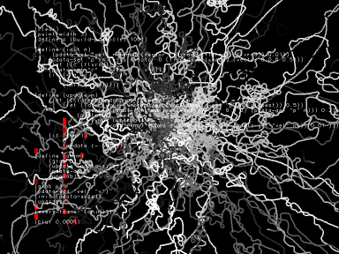

Fluxus manual v0.8 : (C) 2005 Dave Griffiths : dave at pawfal dot org : www.pawfal.org
Fluxus Documentation

1.0 Introduction
2.0 Quickstart
3.0 User Manual
4.0 The Fluxus State Machine
5.0 Global options
6.0 Primitives
7.0 Lights
8.0 The appearance of primitives
9.0 Maths calls
10.0 Deforming primitives
11.0 User input
12.0 Animation sources
13.0 Physics
14.0 Turtle builder
15.0 Examples
16.0 Function index